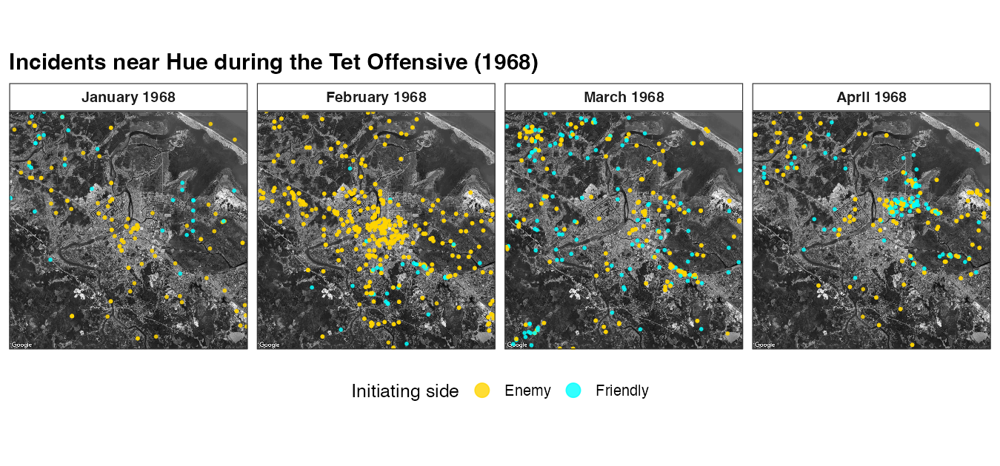
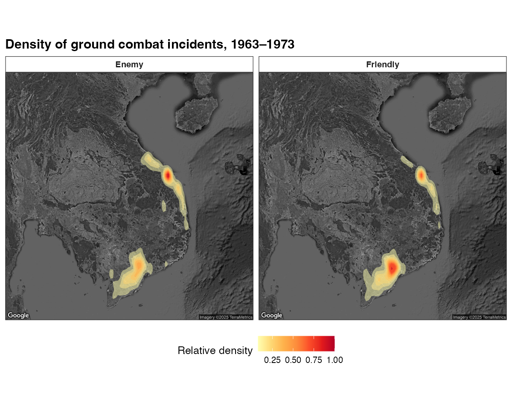

Mapping Incidents Over Satellite Imagery: Points and Heat Maps
Source:vignettes/satellite-maps.Rmd
satellite-maps.RmdThis article maps the combined incident data on top of Google satellite basemaps — first as point maps of individual incident coordinates, then as an aggregate heat map of incident density.
The basemaps come from the Google Maps Static API.
Google’s terms don’t permit redistributing their imagery, so this
package does not ship the basemaps — instead,
get_satellite_map() fetches them at call time using your
own (free) Google Maps API key. The chunks are not run at build time;
the figures shown are pre-rendered static exports (© Google).
Get a key, then cite
ggmap. Register a Google Maps Platform API key and activate it withggmap::register_google(key = "...")before callingget_satellite_map(). If you use these basemaps, cite Kahle, D. & Wickham, H. (2013), “ggmap: Spatial Visualization with ggplot2,” The R Journal 5(1):144–161. Map imagery © Google.
Setup
library(VietnamWarData)
library(dplyr)
library(ggmap)
library(ggplot2)
# One-time: activate your Google Maps Platform API key
# register_google(key = "YOUR_GOOGLE_MAPS_API_KEY")
incidents <- get_comb_inc_dta()A point map: incidents near Hue during the Tet Offensive
Fetch a satellite basemap centered on Hue with
get_satellite_map("hue"). Lay incident coordinates over it
with geom_point() (use inherit.aes = FALSE so
the points don’t inherit the basemap’s aesthetics), and facet by month
to watch the January 1968 Tet Offensive unfold.
hue_map <- get_satellite_map("hue")
bb <- attr(hue_map, "bb") # basemap bounding box
hue_pts <- incidents |>
filter(
!is.na(lat), !is.na(lng), !is.na(aggressor_side),
between(lng, bb$ll.lon, bb$ur.lon),
between(lat, bb$ll.lat, bb$ur.lat),
between(initiation_date, as.Date("1968-01-01"), as.Date("1968-04-30"))
) |>
mutate(month = factor(
format(initiation_date, "%B 1968"),
levels = format(seq(as.Date("1968-01-01"), as.Date("1968-04-01"), "month"), "%B 1968")
))
ggmap(hue_map) +
geom_point(
data = hue_pts,
aes(lng, lat, color = aggressor_side),
size = 0.6, alpha = 0.8, inherit.aes = FALSE
) +
scale_color_manual(values = c("Enemy" = "#FFD400", "Friendly" = "#00FFFF")) +
facet_wrap(~ month, nrow = 1) +
labs(x = NULL, y = NULL, color = "Initiating side")
A heat map: incident density across Southeast Asia
For an aggregate view, drop the points and use
stat_density2d() over a Southeast Asia basemap. Faceting by
aggressor_side contrasts where enemy- and
friendly-initiated incidents concentrated.
se_asia_map <- get_satellite_map("se_asia")
sea <- incidents |>
filter(
!is.na(lat), !is.na(lng),
aggressor_side %in% c("Friendly", "Enemy"),
between(lng, 100, 112), between(lat, 4.5, 25)
)
ggmap(se_asia_map) +
stat_density2d(
data = sea,
aes(lng, lat, fill = after_stat(nlevel)),
geom = "polygon", alpha = 0.5, inherit.aes = FALSE
) +
facet_wrap(~ aggressor_side) +
scale_fill_distiller(palette = "YlOrRd", direction = 1) +
labs(x = NULL, y = NULL, fill = "Relative density")
Notes
-
get_satellite_map()also provides a"saigon"basemap; for any other area, callggmap::get_map()directly with your own bounding box. - For a province-level static map without satellite imagery, see the province choropleth article.
- The published, operation-length–weighted versions of these figures appear in Smith (2025).